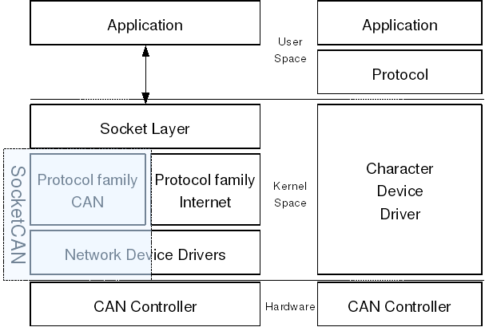

Linux SocketCAN Driver
Table of Contents
1 SocketCAN Introduction
CAN bus is an automation fieldbus commonly used in the automotive industry as the main network bus to allow communications between the many on-board ECUs on modern vehicles.
The Can bus has been supported in the Linux kernel since some years, and there are a lot of drivers for CAN bus controllers, traditional CAN drivers for Linux are based on the model of character deivces. Typically they only allow sending to and receiving from the CAN controller, a set of open source CAN drivers and a networking stack is contributed by Volkswagen Research, which known as SocketCAN. The following graph showed the typical CAN communication layers, with SocketCAN in left and conventional in right.

2 A Virtual SocketCAN Driver
As above graph showed, the CAN bus device exist as a kind of network device in the Linux kernel, so writing a CAN bus controller driver is very samilar to write a network card driver, the following is a virtual can driver.
#include <linux/platform_device.h>
#include <linux/fs.h>
#include <linux/init.h>
#include <linux/module.h>
#include <linux/errno.h>
#include <linux/netdevice.h>
#include <linux/can/led.h>
#include <linux/can/dev.h>
#include <linux/can/skb.h>
#define VCAN_FIFO_DEPTH 4
struct vcan_priv {
struct can_priv can;
struct net_device *ndev;
};
struct platform_device *vcan_dev;
static bool echo; /* echo testing. Default: 0 (Off) */
module_param(echo, bool, S_IRUGO);
MODULE_PARM_DESC(echo, "Echo sent frames (for testing). Default: 0 (Off)");
static void vcan_rx(struct sk_buff *skb, struct net_device *ndev)
{
struct canfd_frame *cfd = (struct canfd_frame *)skb->data;
struct net_device_stats *stats = &ndev->stats;
stats->rx_packets++;
stats->rx_bytes += cfd->len;
skb->pkt_type = PACKET_BROADCAST;
skb->dev = ndev;
skb->ip_summed = CHECKSUM_UNNECESSARY;
netif_rx_ni(skb);
}
static netdev_tx_t vcan_start_xmit(struct sk_buff *skb,
struct net_device *ndev)
{
struct canfd_frame *cfd = (struct canfd_frame *)skb->data;
struct net_device_stats *stats = &ndev->stats;
int loop;
if (can_dropped_invalid_skb(ndev, skb))
return NETDEV_TX_OK;
stats->tx_packets++;
stats->tx_bytes += cfd->len;
/* set flag whether this packet has to be looped back */
loop = skb->pkt_type == PACKET_LOOPBACK;
if (!echo) {
/* no echo handling available inside this driver */
if (loop) {
/*
* only count the packets here, because the
* CAN core already did the echo for us
*/
stats->rx_packets++;
stats->rx_bytes += cfd->len;
}
consume_skb(skb);
return NETDEV_TX_OK;
}
/* perform standard echo handling for CAN network interfaces */
if (loop) {
skb = can_create_echo_skb(skb);
if (!skb)
return NETDEV_TX_OK;
/* receive with packet counting */
vcan_rx(skb, ndev);
} else {
/* no looped packets => no counting */
consume_skb(skb);
}
return NETDEV_TX_OK;
}
static int vcan_change_mtu(struct net_device *ndev, int new_mtu)
{
/* Do not allow changing the MTU while running */
if (ndev->flags & IFF_UP)
return -EBUSY;
if (new_mtu != CAN_MTU && new_mtu != CANFD_MTU)
return -EINVAL;
ndev->mtu = new_mtu;
return 0;
}
static const struct net_device_ops vcan_netdev_ops = {
.ndo_start_xmit = vcan_start_xmit,
.ndo_change_mtu = vcan_change_mtu,
};
static int vcan_probe(struct platform_device *pdev)
{
struct net_device *ndev;
struct vcan_priv *priv;
int err = -ENODEV;
ndev = alloc_candev(sizeof(struct vcan_priv), VCAN_FIFO_DEPTH);
if (!ndev) {
dev_err(&pdev->dev, "alloc_candev() failed\n");
err = -ENOMEM;
goto fail;
}
priv = netdev_priv(ndev);
ndev->netdev_ops = &vcan_netdev_ops;
ndev->flags |= IFF_ECHO;
priv->ndev = ndev;
platform_set_drvdata(pdev, ndev);
SET_NETDEV_DEV(ndev, &pdev->dev);
err = register_candev(ndev);
if (err) {
dev_err(&pdev->dev, "register_candev() failed, error %d\n", err);
goto fail_candev;
}
dev_info(&pdev->dev, "device registered\n");
return 0;
fail_candev:
free_candev(ndev);
fail:
return err;
}
static int vcan_remove(struct platform_device *pdev)
{
struct net_device *ndev = platform_get_drvdata(pdev);
unregister_candev(ndev);
free_candev(ndev);
dev_info(&pdev->dev, "device removed\n");
return 0;
}
static struct platform_driver vcan_driver = {
.driver = {
.name = "vcan",
.owner = THIS_MODULE,
},
.probe = vcan_probe,
.remove = vcan_remove,
};
static int __init vcan_init(void)
{
int retval;
vcan_dev = platform_device_alloc("vcan", -1);
if (!vcan_dev)
return -ENOMEM;
retval = platform_device_add(vcan_dev);
if (retval < 0) {
platform_device_put(vcan_dev);
return retval;
}
retval = platform_driver_register(&vcan_driver);
if (retval < 0)
platform_device_unregister(vcan_dev);
return retval;
}
static void __exit vcan_exit(void)
{
platform_driver_unregister(&vcan_driver);
platform_device_unregister(vcan_dev);
}
module_init(vcan_init);
module_exit(vcan_exit);
MODULE_AUTHOR("Yannik Li");
MODULE_LICENSE("GPL");
MODULE_DESCRIPTION("Virtual CAN");
The Makefile as following:
ifneq ($(KERNELRELEASE),) obj-m := vcan.o else KERNELDIR ?= /lib/modules/$(shell uname -r)/build PWD := $(shell pwd) default: $(MAKE) -C $(KERNELDIR) M=$(PWD) modules clean: @rm -rf .tmp* .vcan* Module* modules* vcan.*o vcan.mod* endif
To install and test the virtual driver as following steps:
- modprobe can
- modprobe can-dev
- modprobe can-raw
- insmod vcan.ko
- ifconfig can0 up
- candump can0
- cansend can0 123#112233